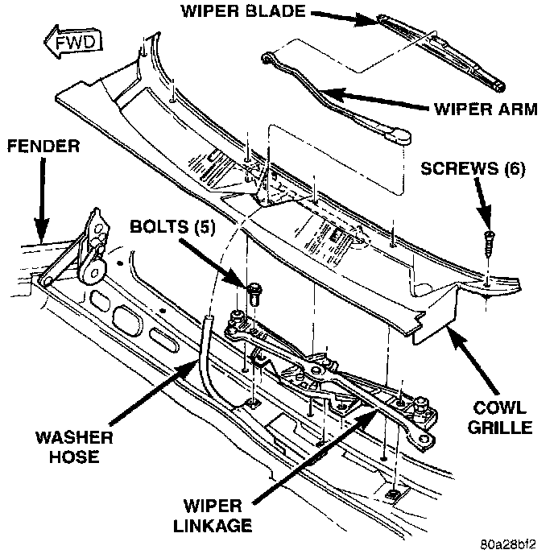

Replacement
1. Disconnect and isolate the battery negative cable.2. Remove the wiper arms as described.
3. Remove the screws that secure the cowl plenum cover/grille panel to the cowl top panel.
4. Lift the cowl plenum cover/grille panel far enough to access the windshield washer plumbing.
5. Disconnect the washer supply hose from the tee fitting.
6. Remove the cowl plenum cover/grille panel from the vehicle and set it aside.
Wiper Linkage Module Remove/Install:

7. Remove the five bolts that secure the wiper linkage module to the cowl mounting bracket.
8. Turn the wiper linkage module over and unplug the wiper motor wire harness connector.
9. Remove the wiper motor and wiper linkage module from the cowl plenum as an assembly.
10. Turn the wiper linkage and motor assembly over and remove the nut that secures the wiper motor crank arm to the motor output shaft.
11. Remove the three screws that secure the wiper motor to the wiper linkage module and remove the motor.
12. Reverse the removal procedures to install. Tighten the mounting hardware as follows:
- Wiper motor screws - 5 to 7 N.m (44 to 62 in. lbs.)
- Crank arm nut - 10 to 12 N.m (88 to 106 in. lbs.)
- Linkage module mounting bolts - 8 N.m (72 in. lbs..).